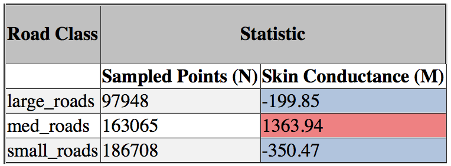

GIS 713 - Geospatial Data Mining
Mapping the Emotional Dimension: Measuring Cyclists’ Physiological Responses Across Space and Time
Garrett C. Millar


Emotions
- Why do emotions matter?
- How in the world do they belong in a conversation with geospatial analytics?

Or even . . .

Emotions
- Emotions
- Measuring Emotion
- Emotions in Space
- Spatial-Emotional Analytics in Urban Planning


Methodology
Study Area — Netherlands

Methodology
Study Area
| Area of Interest: Cycling Highway between Tilburg /& Waalwijk |
Methodology
GPS Data
Methodology
Skin Conductance
Methodology
Viewshed Buffers
Methodology
Framework for Cyclists' Emotional Experiences

Methodology
Mapping Emotion

Methodology
Mapping Emotion cont'd

Methodology
Mapping Emotion over Space /& Time
Results
Descriptive Statistics: Land Use

| By Group |
Results
Descriptive Statistics: Land Use
By Group
Results
Descriptive Statistics: Land Use
| By Individual type | By Individual Type cont'd |
Results
Descriptive Statistics: Land Use
By Individual Land Use Types
Results
Descriptive Statistics: Road Types
| By Group | By Individual Type |
Results
Descriptive Statistics: Road Types
By Group
Results
Descriptive Statistics: Road Types
By Individual Road Types
Conclusion
- Preliminary evidence for Tangible Landscape supporting improved user experience and marginal, task-specific knowledge building
- Knowledge building:
- Ability to directly feel, grasp, and manipulate the various tangible materials
- User Experience:
- Students can try, see and feel, and directly experience multiple variations of a given solution
Questions?
Thank you!